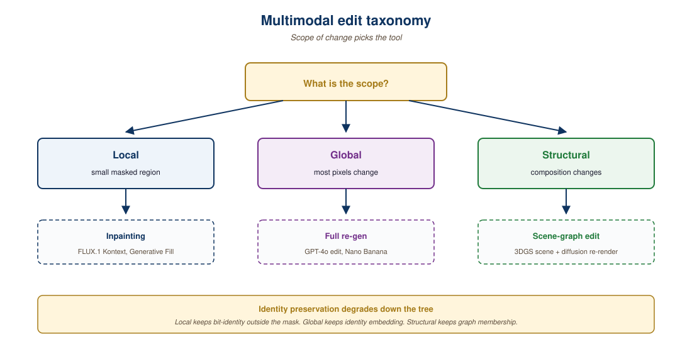

Editing is the hardest case of generation, because most of the output must stay identical to the input. Creating a new image from a text prompt is permissive: anything that matches the prompt is a valid answer. Editing an image so that "the cat now wears a red hat" demands that everything else, the cat's fur, the lighting, the background, the rest of the scene, remain pixel-faithful while one localized region changes. The same constraint structure applies to video remixing (preserve identity and motion, change style), audio remixing (preserve melody, change instrumentation), and scene relighting (preserve geometry and material, change illumination). This section covers the techniques that make targeted edits possible: masking, instruction-tuned diffusion, identity preservation, and the production pipelines that have turned image editing from a research toy into a default Photoshop feature.
Prerequisites
This section assumes familiarity with diffusion models and controlled generation from Section 31.1, the IP-Adapter and ControlNet conditioning patterns from Section 31.3, and the basics of latent space arithmetic from Section 22.1. Familiarity with attention masking is helpful, since most editing techniques are ultimately about scoping which tokens or pixels attention should touch.
The first generation of image editing with diffusion models was indirect and painful: you would invert the input image back to noise (via DDIM inversion), then re-denoise with a modified prompt and hope the trajectory landed close to the original. It worked, sometimes, but the edits were unpredictable and the inversion process was slow. The breakthrough was teaching the model directly: given a paired dataset of (original image, edit instruction, edited image), train a conditional diffusion model that takes the original plus the instruction and outputs the edit in one forward pass. InstructPix2Pix (Brooks et al., 2022) was the first credible execution of this idea, using GPT-3 to generate edit instructions and Stable Diffusion to render before-and-after pairs as synthetic training data. Modern editing models inherit this core architecture: they are diffusion models that have been instruction-tuned on edit pairs.
"Build (input, instruction, ideal output) triples, fine-tune a base model to produce the output given input plus instruction" is exactly the instruction-tuning recipe from Section 18.1. Replace "input text" with "input image", "instruction" with "edit instruction", "output text" with "edited image", and the supervised signal is the same. Brooks et al. (2022, arXiv:2211.09800) even use GPT-3 to synthesize the instructions, which is the self-instruct pattern from Section 17.2 applied to image edits. Emu Edit (Meta, 2023, arXiv:2311.10089) extends the recipe.
The four edit modalities (image, video, audio, scene relighting) share more structure than they appear to. All four are conditional generation tasks where the condition is "everything in the input we did not ask to change." All four use some form of attention masking or cross-attention conditioning to bind the input identity to the output. And all four have crossed the threshold in 2024 to 2025 where production teams treat them as default tools rather than as research demos.

41.6.1 Image Editing: From Inpainting to Instruction Following
Image inpainting in its classical sense is the task of filling a masked region of an image so the result looks plausible. Photoshop has had heuristic inpainting since the 2000s; the diffusion era replaced those heuristics with a denoising step that conditions on the unmasked region. The 2023 to 2025 evolution then layered three innovations on top: instruction-following (you describe what should fill the masked region in natural language), identity preservation (the masked region stays consistent across multiple edits to the same subject), and grounded editing (the model can be asked to edit "the third person from the left" by attending to the right region without an explicit mask).
The state of the art in 2025 is exemplified by FLUX.1 Kontext from Black Forest Labs, a 12-billion-parameter rectified flow transformer trained for image editing as its primary task rather than as an afterthought. Kontext accepts an input image plus an instruction ("add a hat to the cat", "change the lighting to golden hour", "replace the background with a mountain") and produces the edit while maintaining character identity, style, and unrelated details. The key architectural choice is treating the input image and the edit instruction as a joint sequence in cross-attention, allowing the model to attend to the input image throughout the denoising process rather than only at the start.
"Treat input image and edit instruction as a joint sequence in cross-attention" is the same pattern as the chat-template interleaving from Section 24.1: alternate user-turn and assistant-turn tokens, let cross-attention bind them. In Kontext the "user turn" is the input image plus the edit instruction, and the "assistant turn" is the noisy latent being denoised. Once you see editing as a two-turn dialogue between a user-provided context and a model-emitted response, the role of cross-attention becomes the same in both Modules 24 and 32.6.
Identity preservation is the make-or-break property of an editor. A model that produces beautiful edits but cannot keep the same character looking the same across two consecutive edits is useless for storytelling, marketing, or any workflow that involves more than a single image. The trick is that identity is not encoded in any one feature; it is distributed across hair, face shape, skin tone, posture, and stylistic signatures. Modern editing models therefore condition on a reference embedding (often an IP-Adapter-style projection of the input) that captures these features holistically, rather than trying to preserve the input pixel-by-pixel. This separation between "what to change" (prompt) and "what to keep" (reference embedding) is the central design pattern.
The "reference embedding that captures hair, face, skin tone, posture, style" is a learned identity vector in a shared space, structurally the same idea as a sentence embedding for paraphrase invariance (Section 22.1) or a speaker embedding for voice cloning in F5-TTS (Section 31.2). The loss that trains it (pull edits of the same identity together, push different identities apart) is contrastive in the same family as InfoNCE.
The production face of this technology is consumer-grade. Adobe Photoshop's Generative Fill, powered by Firefly, ships instruction-driven inpainting to millions of users. Canva's Magic Edit does the same in a browser. Both products do not surface their underlying models, but the user experience (paint a mask, type an instruction, get a coherent edit in seconds) is now the default expectation across the design tool category.
41.6.2 Video Remixing and Style Transfer
Video editing with diffusion models adds temporal consistency as a constraint. An image editor that produces a different reinterpretation of the same scene every frame is not an editor; it is a flickery mess. The 2024 to 2025 generation of video editors (Runway Gen-4, Pika, and various open-source models built on AnimateDiff or CogVideoX) solve this by sharing attention across frames, so the network's internal representation of "the cat" is computed once and reused throughout the clip.
"Compute the network's internal representation of 'the cat' once and reuse it throughout the clip" is, in mechanism, the same idea as the KV cache from Section 10.3. There you cache the key/value tensors for tokens you have already processed so you do not recompute them at every decoding step. Here you cache the cross-attention features for object identities so they do not drift frame to frame. Different domain, same engineering primitive: cache the things that should not change, recompute only the things that should.
The common operations are style transfer (preserve motion and identity, change visual style: "make this clip look like a Pixar movie"), object replacement (preserve background and motion, swap the subject: "replace the dog with a fox"), and temporal extension (preserve the established style, generate plausible new motion). All three are instances of the same conditional structure: most of the latent space is held fixed and a controlled subspace is allowed to vary. The difference between an amateur edit and a professional one is increasingly less about the model and more about which parts of the input the operator chooses to constrain.
41.6.3 Audio Remixing: Stems, Style, and Voice Conversion
Audio editing follows the same conditional pattern, but the relevant signal decomposition is different. Where image editing decomposes "subject vs. background", audio editing decomposes into stems: drums, bass, vocals, instruments. Modern audio diffusion models (Suno, Udio, Meta's MusicGen, Stability's Stable Audio) operate on mel-spectrograms or latent audio codecs and can remix at the stem level: "keep the drums and vocals, replace the guitar with a synth pad".
Voice conversion is the speech-domain analog. Given a target voice and a source utterance, voice conversion models preserve the prosody, timing, and content of the source while replacing the timbre with the target voice. ElevenLabs has commercialized this at scale, with sub-second latency and identity preservation good enough for production audiobook narration. The same diffusion-with-conditioning architecture applies, with the conditioning being a short reference clip of the target voice rather than a text prompt.
"Keep the drums and vocals, replace the guitar" is conditional generation where part of the output is held fixed and the rest is generated. That is the constrained-decoding pattern from Section 5.3: parts of the sequence are pinned to a target, the model generates the rest consistent with that target. In text, the pinned parts are tokens; in audio remixing, the pinned parts are stem signals. Same constraint, different sample space.
Voice cloning and face editing are dual-use technologies. The same techniques that enable legitimate accessibility (giving a stroke patient back their voice) enable malicious impersonation. As of 2026, the EU AI Act classifies deepfake generation as a transparency-obligation system, requiring clear labeling of AI-generated or manipulated content. The safety and watermarking practices from Chapter 47 are not optional for these systems; build C2PA content credentials and SynthID-style watermarks into the generation pipeline from day one rather than retrofitting them after the first incident.
41.6.4 Scene Relighting: Editing in 3D Without Reconstructing 3D
The most technically interesting frontier is scene relighting: given a photograph of a scene, change the lighting (time of day, light source position, shadow direction) without explicitly reconstructing the 3D geometry. Classical computer graphics required a full 3D model, materials, and a physically-based renderer. Modern neural relighting infers an implicit decomposition of the image into intrinsic components (geometry proxy, albedo, surface normals, lighting environment), allows the user to edit one component (typically the lighting environment, parameterized as a spherical harmonic or HDR map), and re-renders the scene with the rest of the decomposition held fixed.
"Decompose into intrinsic components, edit one, hold the rest fixed" is the same pattern as sparse-autoencoder feature steering in mechanistic interpretability (Section 11.3): a model represents the world in a partially disentangled basis, you find the axis you want to edit, you adjust the activation of that axis, and the rest of the representation does the right thing. In Section 11.3 the axes are LLM features; in scene relighting they are intrinsic image components. The recipe for safe, controllable edits is the same.
The technique is now production-ready for product photography, where a single capture can be relit for dozens of marketing contexts. Companies like Imagen AI (no relation to Google's Imagen) and nerfstudio's relighting plugins offer this in pipelines aimed at e-commerce. The cost savings are substantial: a single photoshoot replaces what used to require a full studio session per lighting scenario.
A large fashion retailer with 50,000 SKUs traditionally shot each product under three lighting conditions (studio, daylight, dramatic) for use across its website, social ads, and email campaigns. That meant 150,000 photographs per season at roughly twenty dollars per shot, plus stylist and photographer time, for a total above three million dollars. Neural relighting reduces this to one capture per SKU plus a relighting step that costs roughly five cents in GPU time. The hard part is no longer the technology; it is rewriting the brand guidelines and approval workflow to trust the relit output, and building the C2PA provenance chain so the marketing team can audit that the visual was generated from an authentic source capture rather than fabricated wholesale.
What Comes Next
Section 41.7 closes the multimodal chapter by zooming out from generation and editing to reasoning and retrieval. Generation models can produce images; reasoning models must understand them, search across them, and tie them back to language. The CLIP family, BLIP-3, and modern multimodal evaluation benchmarks tell the story of how to measure whether a vision-language model truly grasps a scene or merely correlates pixel patches with caption words.